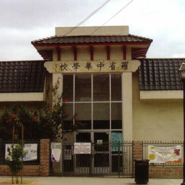

Education
University of California, San Diego
2014-Present
• Expected date of Graduation: June 2018• Major: Cognitive Science: Human Computer Interaction
• Known Coding languages: Java, C/C++, Python, Swift, HTML/CSS
• Major Grade Point Average (GPA): 3.545
Yonsei University
June 2016-August 2016
• Summer Education Study Abroad• Classes: Social Psychology, Contemporary Korean Culture
• Grade Point Average (GPA): 4.0
John Marshall High School
2010-2014
• Cumulative Grade Point Average (GPA): 4.7• Graduated with a High Honors Roll

Chinese Confucius Temple School
2004-2011
• Learned 3 different Chinese dialects: Mandarin, Taishanese, and Cantonese